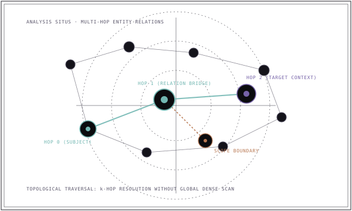

Yalıtılmış olgulardan bağlantılı ağlara#
Yapılandırılmamış hafıza olguları birbirinden kopuk metin parçaları olarak saklar: 'Ahmet X Hukuk Bürosunda ortaktır', 'X Hukuk Bürosu Y Şirketini temsil eder', 'Y Şirketi Z İştirakini satın almıştır'. Yalnızca düz vektör aramasına dayanan bir ajan, her cümleyi uzayda izole bir nokta olarak görür.

Bir bilgi grafiği bu olguları açık ve gezilebilir bir topolojiye bağlar: (Ahmet)-[:ORTAK]->(X Bürosu)-[:TEMSİL_EDER]->(Y Şirketi)-[:SATIN_ALDI]->(Z İştiraki). İlişkilerin kendisi birinci sınıf, sorgulanabilir veri varlıkları haline gelir.
Çok sekmeli gezinim (multi-hop traversal) nasıl çalışır?#
Bir ajanın 'Ahmet'in Z İştiraki ile potansiyel bir çıkar çatışması var mı?' sorusunu yanıtlaması gerektiğini düşünün:
- Vektör Arama başarısızlığı: Hiçbir tek metin parçası hem 'Ahmet' hem de 'Z İştiraki' ifadelerini birlikte içermez. Sorgu ile izole metin parçaları arasındaki benzerlik düşüktür.
- Graph Gezinimi başarısı: Ajan 'Ahmet' varlık düğümünü sorgular, dışa doğru ilişki kenarlarını takip eder ve onu Z İştirakine bağlayan çok sekmeli yolu 3 deterministik adımda keşfeder.
- Çok Sekmeli Gezinim (Multi-Hop Traversal)
- Tek bir metin parçasında açıkça belirtilmeyen dolaylı ilişkileri çıkarmak için bağlantılı kenarlar $(E_1 ightarrow E_2 ightarrow \dots ightarrow E_k)$ boyunca sırayla ilerleme süreci.
Grafikler ne zaman yardımcı olur — ne zaman gereksiz karmaşıklık getirir?#
Grafikler tüm yapay zekâ uygulamaları için zorunlu değildir. Basit problemlere graph altyapısı eklemek ciddi bir mühendislik yükü yaratır:
| Boyut | Düz Vektör / Lexical Hafıza | Graph Destekli Hafıza |
|---|---|---|
| Kabul / Yazma Maliyeti | Düşük: metin parçalarını doğrudan vektörleştir | Yüksek: LLM ile varlık, tip ve ilişki çıkarımı gerektirir |
| Çıkarım Güvenilirliği | Deterministik metin bölme | Olasılıksal: LLM var olmayan ilişkiler halüsinasyon edebilir |
| İlişkisel Çok Sekmeli Muhakeme | Çok zayıf: akıl yürütme zincirlerini izleyemez | Çok güçlü: yol sorguları (Cypher, SPARQL) kesindir |
| Sorgu Gecikmesi | Milisaniyenin altında vektör taraması | Değişken: graph çapına ve bağlantı yoğunluğuna bağlıdır |
| İdeal Kullanım Alanları | Belge arama, SSS, anlamsal keşif | Şirket yapıları, hukuki çatışmalar, bağımlılık ağları |
Çıkarım ve senkronizasyon zorluğu#
Üretim ortamlarında bağımsız bir graph veritabanını tek bilgi kaynağı (source of truth) yapmak senkronizasyon krizlerine yol açar. Bir varlık güncellendiğinde veya silindiğinde, graph düğümlerinin yetim kalmaması için atomik olarak güncellenmesi gerekir.
MESA graph hafızasını nasıl uygular?#
MESA Core içinde graph, dışarıdan bağımlı kapalı bir veritabanı değildir. Kanonik hafıza, SQLite içinde yapılandırılmış assertion'lar olarak kaydedilir. MESA ardından ilişkisel üçlüleri analitik graph sorguları için optimize edilmiş süreç içi Kùzu veritabanına projekte eder.
Bu projeksiyon yaklaşımı işlemsel dayanıklılık sağlar: graph projeksiyonu bozulursa veya senkronizasyonunu kaybederse, kanonik SQLite deposundan deterministik olarak yeniden üretilebilir. Veri projeksiyonlarını MESA Core sayfasında inceleyin.